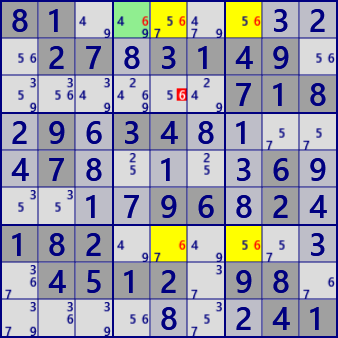

Finned Fish
he left figure is X-Wing(2D-Fish).
From the Locked relationship between BaseSet and CoverSet,
circled digits X can be excluded from candidate digits. Large circle represent block.
Even if the digit X with square is additionally present as shown on the right,
the circled digit X can be excluded from the candidate digit.
And the column c1 squared digit X is also excluded.
Square boxed digit X is called Fish's Fin.
The cell arrangement on the right is Finned Fish.
In Finned Fish, since the complementary relationship is not established,
there are cases where Finned Fish of 5th order or more is necessary.
This is Finned Fish. From the left is Finned X-Wing, Finned Sword Fish, Finned Jerry Fish. Yellow cell is Fish part, green cell is Fin.


81........27.3149.......718.9.34.....7.....6.....96.2.182.......4512.98........41
19.3.......2...14.8..641...3.9..8...75.....28...7..9.5...164..2.16...7.......7.81
..9..154..5..9.....6.5..92.8..3..1.41..4.6..95.4..8..2.42..9.6.....6..1..187..2..
Finned Fish program
Finned Fish is solved using the concept of BaseSet/CoverSet and Fin.
Fish_Basic is in the X-Wing(Fish) section.
public partial class FishGen: AnalyzerBaseV2{
public bool FinnedXWing(){ return Fish_Basic(2,true); }
public bool FinnedSwordFish(){ return Fish_Basic(3,true); }
public bool FinnedJellyFish(){ return Fish_Basic(4,true); }
public bool FinnedSquirmbag(){ return Fish_Basic(5,true); }
public bool FinnedWhale(){ return Fish_Basic(6,true); }
public bool FinnedLeviathan(){ return Fish_Basic(7,true); }
}